Tutorial 13: Introducing implicit stochastic equilibrium routing
Contents
- Disclaimer
- Introduction
- Loading the data
- Setup the simulation
- Setup the dynamic equilibrium simulation
- Transform CVN values to travel times
- Visualize the split rates at the diverge
- Loading the data
- Setup the simulation
- Setup the dynamic equilibrium simulation
- Transform CVN values to travel times
- Visualize the split rates at the diverge
- Closing notes
Disclaimer
This file is part of the matlab package for dynamic traffic assignments developed by the KULeuven.
Copyright (C) 2016 Himpe Willem, Leuven, Belgium
This program is free software: you can redistribute it and/or modify it under the terms of the GNU General Public License as published by the Free Software Foundation, either version 3 of the License, or any later version.
This program is distributed in the hope that it will be useful, but WITHOUT ANY WARRANTY; without even the implied warranty of MERCHANTABILITY or FITNESS FOR A PARTICULAR PURPOSE. See the GNU General Public License for more details.
You should have received a copy of the GNU General Public License along with this program. If not, see http://www.gnu.org/licenses/.
More information at: http://www.mech.kuleuven.be/en/cib/traffic/downloads or contact: willem.himpe {@} kuleuven.be
Introduction
In this tutorial a basic algorithm is implemented to find a stochastic user equilibrium in a dynamic traffic assignment. The algorithm is based on an implicit routing procedure. This requires formulating a topological order of nodes to describe all available route alternatives without circles. The topological order based on the shortest travel times has a large influence on the convergence and solution of the algorithm.
%add these folders to the search path addpath('Dynamic Traffic Assignment','Visualization Tools','Network Data') javaclasspath('Dynamic Traffic Assignment'); %clear the work space clear %clear the command window clc %close all windows close all display('<<<Introducing implicit stochastic equilibrium routing>>>')
<<<Introducing implicit stochastic equilibrium routing>>>
Loading the data
The network represents a simple two-route network with a bottleneck on the shortest alternative. The longer alternative has only a single link which is longer. This link is the first link of the alternative.
% Network and demand data load net6.mat % Plot the network plotNetwork(nodes,links,true,[]); % Displays the link properties of the alternative links(7:10,:)
ans =
id fromNode toNode length freeSpeed capacity kJam
__ ________ ______ ______ _________ ________ ____
7 2 8 5 100 2000 120
8 8 9 1 100 2000 120
9 9 10 1 100 2000 120
10 10 6 1 100 2000 120
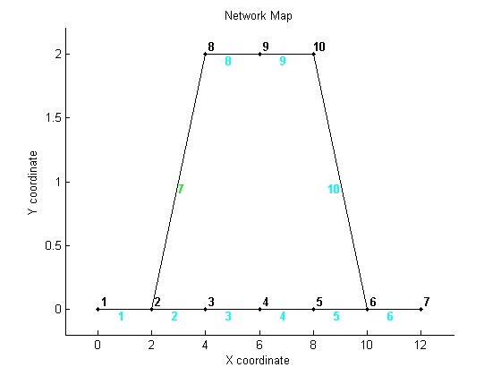 Setup the simulation
Before the simulation can be run the time interval has to be set and the total number of time steps has to be defined.
%setup the time interval and total number of time steps dt = 0.01; totT = round(1.5/dt); %build the full ODmatrix [ODmatrix,origins,destinations] = buildODmatrix(ODmatrices,timeSeries,dt,totT);
Setup the dynamic equilibrium simulation
The routing behavior in the stochastic routing behaviour is aggregated over larger time intervals to speed up computation. It is believed that the route choice time intervals varies with a much lower frequency in reality than the typical interval of a simulation. The routing is described by a logit model with a scaling parameter to capture the variance of the error term.
%time interval for the route choice rc_dt = dt; %maximum number of iterations max_it = 100; %scaling of the updates over iterations (<1) alpha = 0.25; %scaling of the utility (logit) theta = 0.010; %run DTA with deterministic route choice and MSA averaging tic [cvn_up,cvn_down,TF] = DTA_STOCH(nodes,links,origins,destinations,ODmatrix,dt,totT,rc_dt,max_it,alpha,theta); toc
Maximum Iteration limit reached: 100 Gap: 3.9341e-08 Elapsed time is 32.919600 seconds.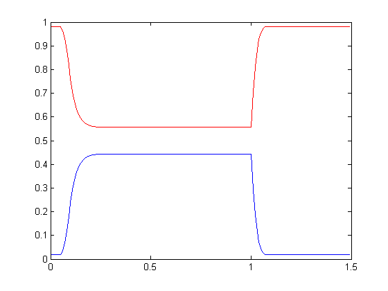 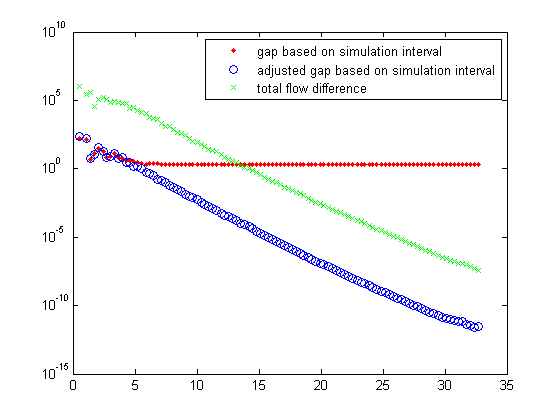
Transform CVN values to travel times
The upstream and dowsntream CVN functions of the link transmission model are transformed into travel times for every link in the network. The travel times are compared for the main route (from split to merge) and the alternative route.
%calculate the simulated travel times [simTT] = cvn2tt(sum(cvn_up,3),sum(cvn_down,3),dt,totT,links); %visualize the travel time along the main route (from split to merge) [~,~,~,tt_m]=plotTT(links,2:5,simTT,dt,totT); title('Travel time graph main route','FontSize',14,'fontweight','b') %visualize the travel time along the alternative route (from split to merge) [~,~,~,tt_a]=plotTT(links,7:10,simTT,dt,totT); title('Travel time graph alternative route','FontSize',14,'fontweight','b') %compare both travel times figure; plot(dt*[0:totT],tt_m,'b',dt*[0:totT],tt_a,'r'); grid on legend('Main route','Alternative route') xlabel('Time [hr]','FontSize',12); ylabel('Travel Time [hr]','FontSize',12); title('Travel time graph','FontSize',14,'fontweight','b');
 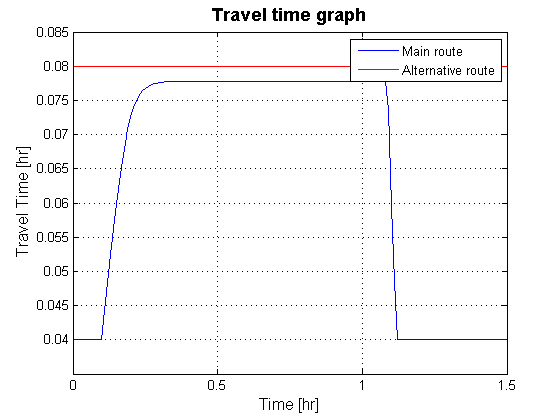
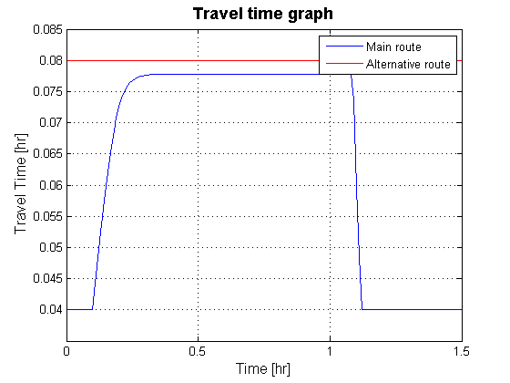 Visualize the split rates at the diverge
The following lines of code visualize the splitting rates at the diverge.
sp=[TF{2,:,1}];
figure;plot(dt*[0:totT-1],sp(1:2:end),'r',dt*[0:totT-1],sp(2:2:end),'b');
grid on;
legend('fraction using the main road', 'fraction using the alternative');
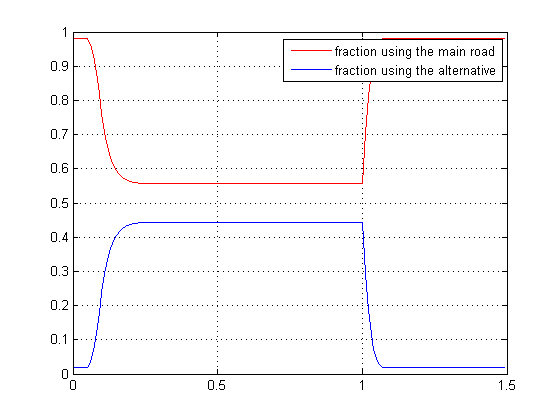 Loading the data
The network represents a simple two-route network with a bottleneck on the shortest alternative. The longer alternative has only a single link which is longer. This link is the last link of the alternative.
% Network and demand data load net7.mat % Plot the network plotNetwork(nodes,links,true,[]); % Displays the link properties of the alternative links(7:10,:)
ans =
id fromNode toNode length freeSpeed capacity kJam
__ ________ ______ ______ _________ ________ ____
7 2 8 1 100 2000 120
8 8 9 1 100 2000 120
9 9 10 1 100 2000 120
10 10 6 5 100 2000 120
Setup the simulation
Before the simulation can be run the time interval has to be set and the total number of time steps has to be defined.
%setup the time interval and total number of time steps dt = 0.01; totT = round(1.5/dt); %build the full ODmatrix [ODmatrix,origins,destinations] = buildODmatrix(ODmatrices,timeSeries,dt,totT);
Setup the dynamic equilibrium simulation
The routing behavior in the stochastic routing behaviour is aggregated over larger time intervals to speed up computation. It is believed that the route choice time intervals varies with a much lower frequency in reality than the typical interval of a simulation. The routing is described by a logit model with a scaling parameter to capture the variance of the error term.
%time interval for the route choice rc_dt = dt; %maximum number of iterations max_it = 100; %scaling of the updates over iterations (<1) alpha = 0.05; %scaling of the utility (logit) theta = 0.010; %run DTA with deterministic route choice and MSA averaging tic [cvn_up,cvn_down,TF] = DTA_STOCH(nodes,links,origins,destinations,ODmatrix,dt,totT,rc_dt,max_it,alpha,theta); toc
Maximum Iteration limit reached: 100 Gap: 436.131 Elapsed time is 33.184369 seconds.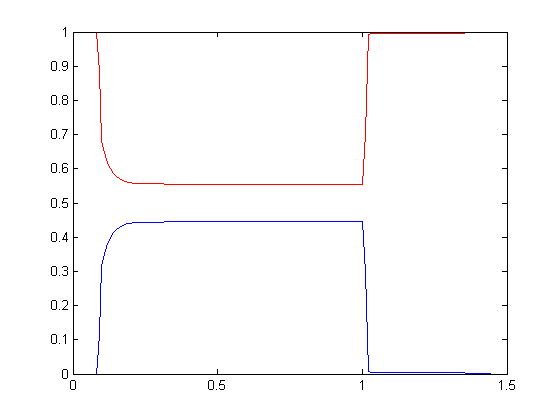

Transform CVN values to travel times
The upstream and dowsntream CVN functions of the link transmission model are transformed into travel times for every link in the network. The travel times are compared for the main route (from split to merge) and the alternative route.
%calculate the simulated travel times [simTT] = cvn2tt(sum(cvn_up,3),sum(cvn_down,3),dt,totT,links); %visualize the travel time along the main route (from split to merge) [~,~,~,tt_m]=plotTT(links,2:5,simTT,dt,totT); title('Travel time graph main route','FontSize',14,'fontweight','b') %visualize the travel time along the alternative route (from split to merge) [~,~,~,tt_a]=plotTT(links,7:10,simTT,dt,totT); title('Travel time graph alternative route','FontSize',14,'fontweight','b') %compare both travel times figure; plot(dt*[0:totT],tt_m,'b',dt*[0:totT],tt_a,'r'); grid on legend('Main route','Alternative route') xlabel('Time [hr]','FontSize',12); ylabel('Travel Time [hr]','FontSize',12); title('Travel time graph','FontSize',14,'fontweight','b');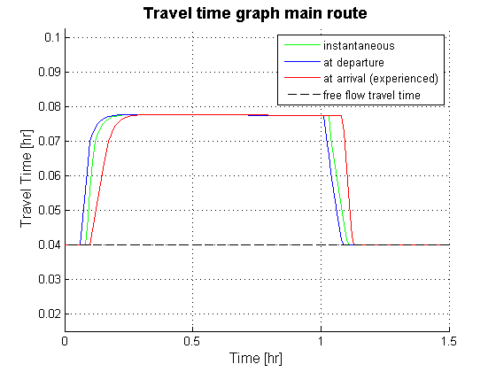 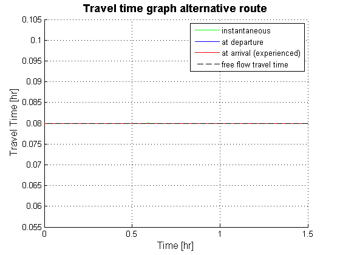 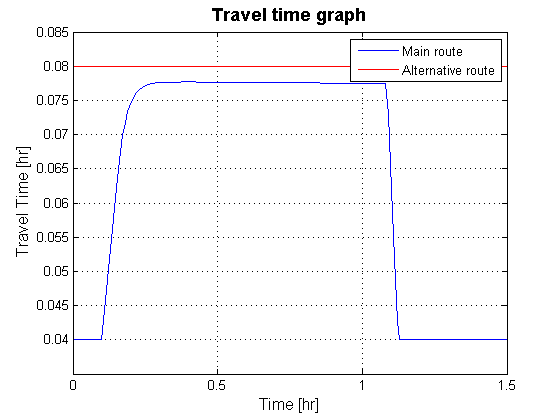
Visualize the split rates at the diverge
The following lines of code visualize the splitting rates at the diverge.
sp=[TF{2,:,1}];
figure;plot(dt*[0:totT-1],sp(1:2:end),'r',dt*[0:totT-1],sp(2:2:end),'b');
grid on;
legend('fraction using the main road', 'fraction using the alternative');
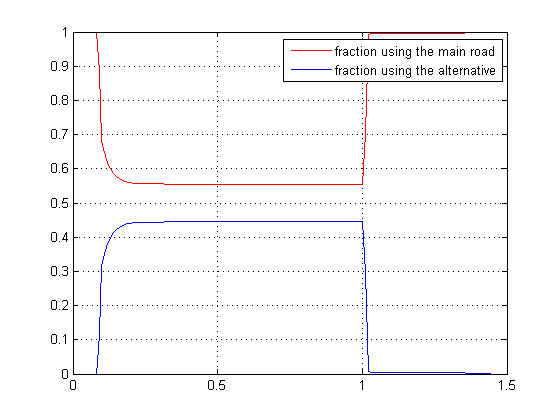 Closing notes
- ITEM1
- ITEM2